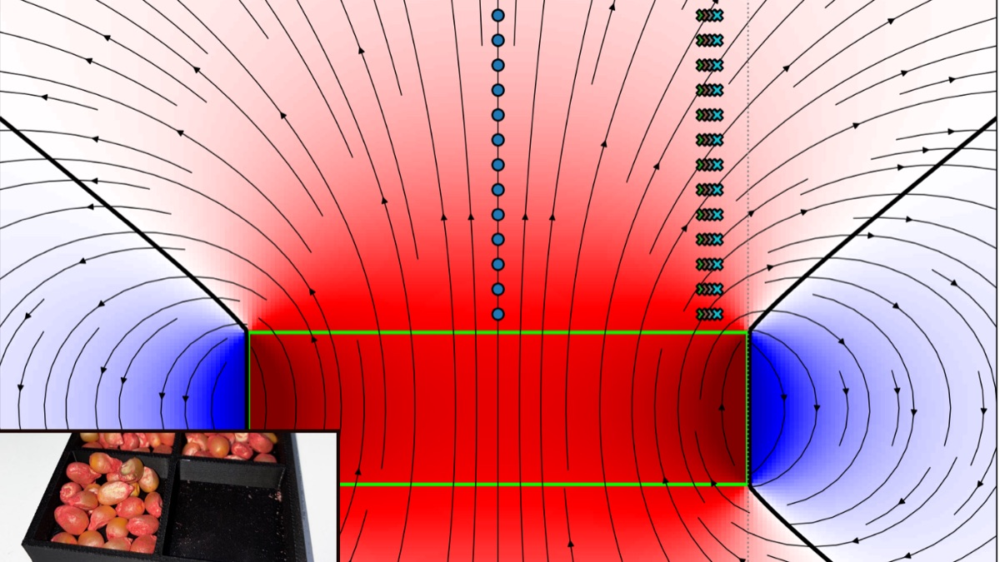

Campos magnéticos y germinación de Zea mays
Construí el experimento completo: torre de exposición impresa en 3D, caracterización experimental y numérica de los imanes, un sistema propio de adquisición de imágenes y visión por computadora para medir plántulas sin hacerlo a mano. Antes de medir cualquier efecto corrí tres controles negativos de 72 h (81 bandejas) para caracterizar el piso de ruido del montaje.